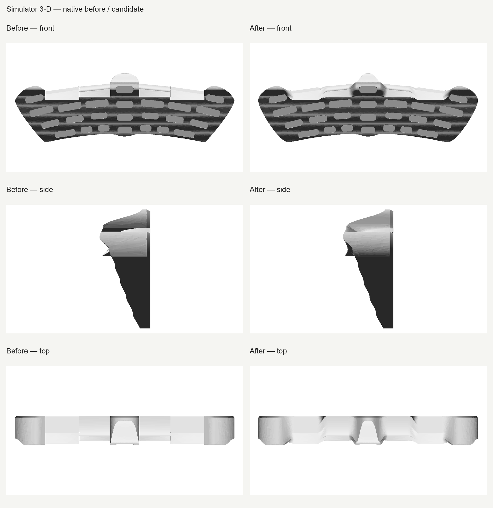
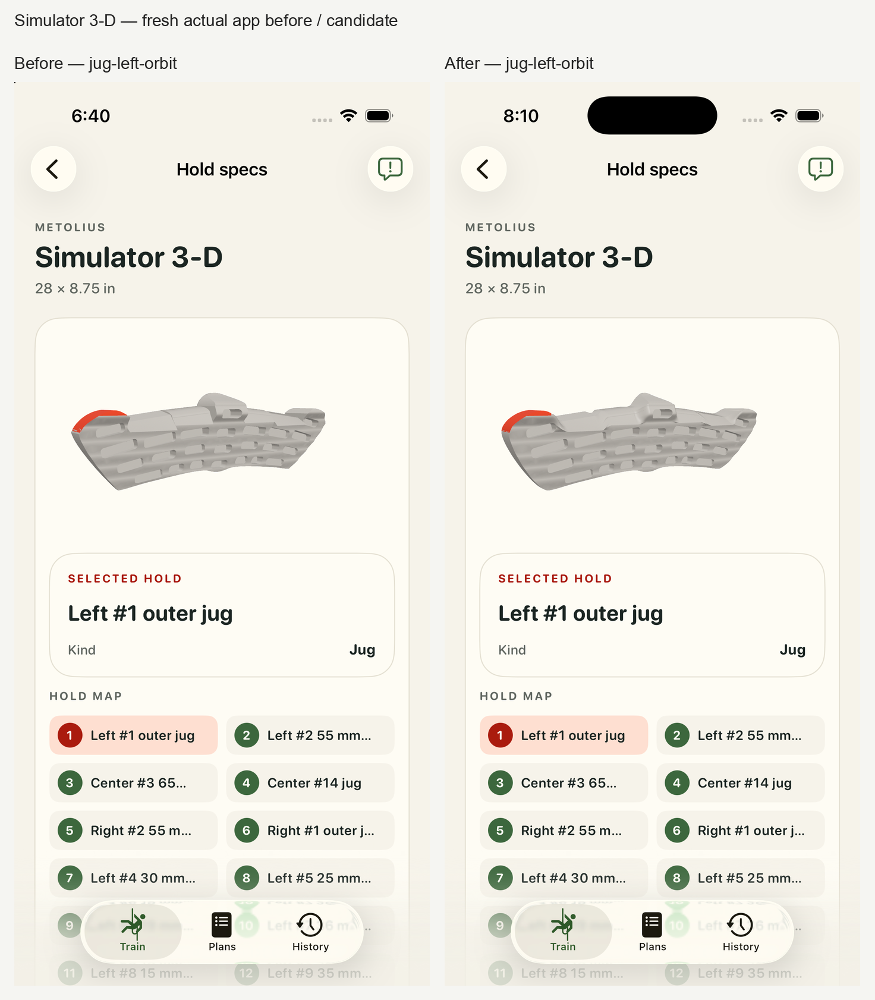

Rounded outline joins and blended shoulder transitions; actual-app inspection confirms smoother corners and continuous shoulders, with representative highlights preserved. Published face and hold-depth facts and all 30 logical contacts are unchanged. Revised human acceptance remains pending.
Candidate awaits human acceptance after the original “Jagged” feedback.


Authored overall thickness is measured 94.1183246 mm, a display estimate with a +0.1183246 mm difference from the former ~94 mm estimate. Exact 94 mm preservation is not claimed. Published 711 × 222 mm face dimensions and 27 hold-depth checks retain their strict original gates. The final continuity report measures residual roof normal changes up to 6.7698°. Finite probes do not establish global roof G1 or C1 continuity.
App images are representative, not an all-contact sweep. All eight before and eight after frames and AX records are retained.
Review details · Technical proof · Raw hashes · Manufacturer photograph · Manufacturer numbered diagram